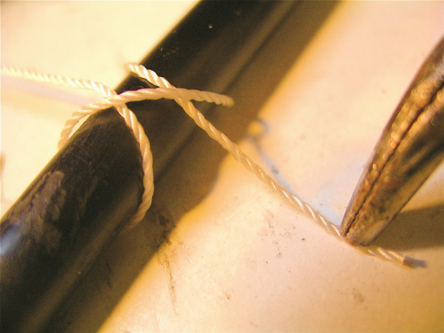
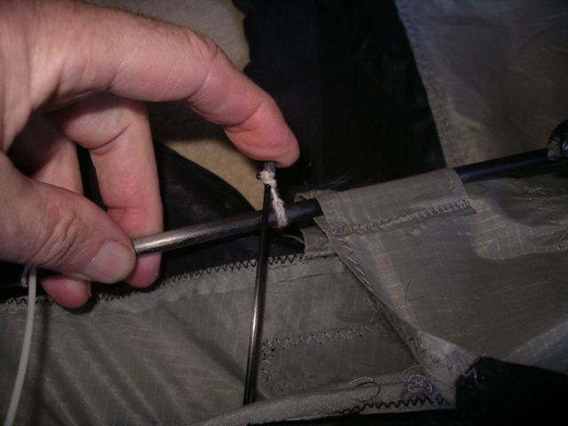
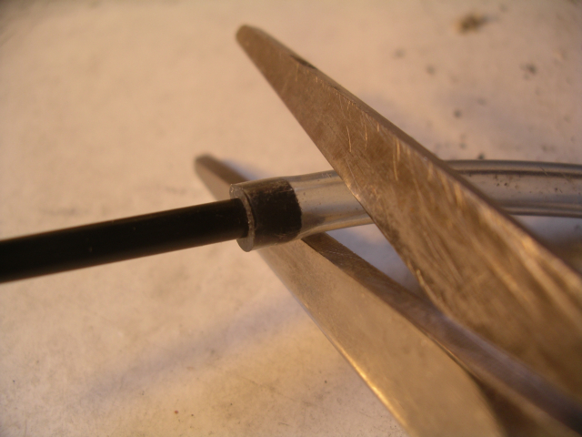

J'ai déjà mentionné l'utilisation de la colle cyanolite ou "cyano" au hasard de plusieurs pages (Albatros, Rokkaku, raccord souple, cannes, etc.). Je reprends tous ces exemples et d'autres pour les regrouper et vous convaincre que cette possibilité est largement sous-employée dans notre petit monde et simplifierait et améliorerait la construction de beaucoup de cerfs-volants.
L'utilisation de la cyano présente plusieurs avantages :
- les versions modernes collent très bien (mais sont plus difficiles à décoller que les anciennes, évidemment). Les Airbus et d'autres ont maintenant beaucoup de parties même structurelles collées, alors un cerf-volant !
- le collage est très rapide et permet de poursuivre le travail, sans attendre comme pour les colles bi-composants ou d'autres.
- la colle est très liquide et pénètre naturellement dans les interstices des collages à faire. On peut donc en général assembler les pièces pour bien voir leur interconnexion et coller dans la foulée sans démonter.
- la colle est très transparente et ne se voit pas, même après vieillissement prolongé.
Des applications
1) Faciliter l'utilisation de cannes à pêche.
Je ne reprendrai pas en détail cette page: on peut sécuriser les bouchons externes en caoutchouc via une ficelle serrée autour du caoutchouc et encollée.
On peut aussi augmenter un peu, en l'enduisant de cyano, le diamètre d'une canne devenue trop lâche à force de montages dans le sable.
2) Butées sur des tubes ou des cannes.
Ces butées sur un tube peuvent servir de limite d'emboîtage ou de limites de glissement d'un tendeur, d'une fourche ou du raccord d'un tube perpendiculaire, etc. Elles peuvent être réalisées très simplement et "interactivement" : un bout de durite serrant un peu est enfilé sur le tube. On peut monter le cerf-volant, régler la butée au bon point, puis encoller, surtout du côté vers lequel la butée glisserait. Si vous n'avez qu'une durite trop grosse, fendez-la, diminuez son diamètre en enlevant une partie, replacez-là sur le tube et collez-là. Ajouter de la colle dans la fente avant de serrer la fera pénétrer sur toute la portée et assurera le collage. Vous pouvez même faire tourner la durite avant que la cyano ne soit sèche (donc vite...) pour assurer une enduction uniforme. Si vous utilisez une durite non coupée, notez l'emplacement, décalez la butée, encollez, et remettez (un seul essai !) la butée sur la colle. Si le résultat est correct, tout le collage doit être transparent, vu à travers la durite.

Une autre manière de réaliser une petite butée est de faire un noeud de cabestan de ficelle (photo ci-dessus), d'encoller le croisement, puis de serrer vite et fort en tirant sur les bouts. Couper ensuite rapidement ceux-ci et les noyer dans la colle (en en remettant éventuellement un peu) en les lissant avec un objet dur, par exemple un briquet. Finir d'encoller tout le tour de la surliure.
Retenez que, pour assurer les collages ficelle/tube, il faut toujours au moins 2 tours de ficelle.
3) Frettage d'un tube ou d'une canne.
L'opération précédente ("petite butée") peut aussi être utilisée pour "fretter" un emboîtement : le tube extérieur a la mauvaise habitude de se fendre en long quand l'assemblage est soumis à des efforts excessifs. Le frettage (utilisé jadis sur les canons de bronze avec du fil de fer, c'est dire !) repousse beaucoup la limite d'éclatement.
On peut ainsi, à condition de le fretter, réaliser un raccord en utilisant un bout de tube carbone plus gros.
Un frettage avec du gros ruban adhésif n'est pas très efficace, car d'une part certains s'allongent un peu à la traction, comme un tissu, d'autre part la colle inséchable glisse doucement sous l'effort. Si vous voulez "scotcher", prenez plutôt du scotch simple qui ne glisse pas à la longue.
Le frettage est aussi très utilisé sur les structures bois ou bambou, pour renforcer soit des assemblages soit des fentes ou perçages supportant un fil de tension. Là, les Chinois utilisent généralement de multiples tours de fil à coudre, encollés à la colle à bois. Mais évidemment, sur un tube carbone, utiliser 2 tours de ficelle et de la cyano est plus facile d'emploi et plus sûr...
4) Articuler un jonc sur un tube.
Une telle articulation peut être utile pour pouvoir démonter un jonc sans le perdre et sans utiliser de raccord plus ou moins rigide et gênant le rangement. Faire un noeud coulant de ficelle près du bout du jonc et une clé supplémentaire dans le sens qui serre le noeud, encoller. Faire un noeud de cabestan sur le tube pour favoriser ensuite la tenue de l'encollage. Le noeud de cabestan a l'avantage d'être réglable avant collage pour avoir le moins de ficelle libre possible. Encoller et finir comme la "petite butée".

5) Faire un embout.
Quand on crée, on n'a pas toujours sous la main un embout du bon diamètre. On peut utiliser un tube souple (durite, par exemple) qu'on colle au bout en le laissant dépasser un peu. Le collage évite de perdre l'embout, mais aussi d'empêcher celui-ci de s'enfoncer trop, perdant sa fonction "anti-percement". On peut même ensuite en chauffant au briquet arrondir le bout, mais ce n'est pas nécessaire si vous avez utilisé un tube souple.

6) Attacher un bridage sur un tube.
En préliminaire, je souligne qu'attacher un tendeur sur un tube est en général bien préférable à l'attacher au fourreau borgne, par exemple sur un Rokkaku. Ainsi, le fourreau ne s'allongera pas progressivement, ne déformera pas la toile, ne se percera pas naturellement, et sera moins sensible aux chocs ou frottements. Et même s'il se perce, le cerf-volant restera souvent utilisable... provisoirement.
D'ailleurs, en passant, pour réparer sur le tas un fourreau perforé, bourrer dedans un fond d'ouate, papier froissé ou tissu, y mettre de la cyano par le trou et par l'intérieur, tasser avec le tube sans le laisser se coller, attendre le séchage, remettre le tube et voler (l'immobilisation n'aura duré que... 2 mn !).
Retour à l'attache du tendeur : au début, je collais sur le tube une butée sur laquelle le tendeur prenait appui. Maintenant, j'utilise ma méthode préférée : noeud coulant bien serré puis demi-clé supplémentaire dans le sens serrant le noeud coulant. Bien positionner, en général le plus près possible du fourreau, et encoller.
Le plus souvent, d'un côté d'un tendeur, on mettra un bout court terminé par une boucle. De l'autre côté, un bout long réglable par noeud de fouet qui passera dans la boucle comme expliqué à la page Tendeur réglable. Attention, au collage, à bien penser à orienter les brins de chaque bout du tube du même côté de celui-ci ! Un tel collage tient parfaitement même sur un tube carbone.
7) Réparer un tube carbone ou fibre de verre.
Les tubes sont souvent fendus seulement en long sans manque ou effilochage. Un collage est alors possible, il sera bien sûr nettement moins solide que le tube d'origine mais peut dépanner sur le terrain, pour un cerf-volant... ou une tente ! Préparer du ruban adhésif et vérifier que le tube peut se reconstituer sans manque ou brin en travers gênant. Encoller rapidement la fissure et poser le ruban aussitôt en le tendant bien pour assurer un bon contact entre les surfaces, et la rotondité du tube (le rouler entre les doigts à mesure). On aura intérêt, afin de pouvoir poser rapidement le ruban avant séchage, à traiter séparément les fissures importantes. Enlever au besoin pour cela le ruban provisoire. Une fois tout fini, laisser le ruban ou le refaire propre. Je recommande plutôt de fretter le tube à la ficelle comme décrit plus haut, ce qui est plus fiable, éventuellement en plusieurs points sur la longueur fissurée. Commencer par encoller et fretter près de la partie saine, afin d'assurer sa rotondité sans chevauchement des éclats puis gagnez vers la partie la plus meurtrie. Pour assurer, on pourra auparavant ajouter une virole externe bien ajustée, à coller aussi une fois en place. La fretter si votre virole est un bout de tube carbone.
8) Réparer une canne à pêche.
Quand la canne se fend en long (classiquement à l'endroit de l'emboîtement, sur cerf-volant ou bannière), appliquer la méthode décrite pour les tubes de carbone. Cette méthode est très durable sur les fentes en bout pas trop longues, à condition de bien les fretter. On pourra d'ailleurs fretter à titre préventif le bout du plus gros tronçon, celui qui casse sur les bannières quand le vent forcit ! Les cannes étant coniques, un frettage assez mince ne gêne le rangement d'aucun tronçon.
Sur mes oiseaux, la canne endommagée est souvent pliée en deux, voire cassée en 2 morceaux ! La réparation nécessite un tronçon de canne (c'est pas ce qui me manque !) qu'on glisse à l'intérieur. Ne pas supprimer les bouts des cannes meurtris sauf s'ils gênent. Faire des essayages sans colle pour trouver la bonne correspondance (tourner les tronçons), afin de couper le renfort interne à la longueur exacte (ne pas mesquiner !) et mettre en place les esquilles. Le renfort doit forcer un peu des 2 côtés, sans faire éclater plus la canne, bien sûr. Ensuite, mettre en place le total et instiller de la colle là où la canne est mâchouillée. Si au contraire on encolle le renfort avant de l'emboîter, il y a toutes les chances pour que la colle le bloque avant le "forçage" final, et la réparation n'est pas bonne. Laisser sécher, râper les bouts hirsutes et ré-enduire de colle. Ensuite, le télescopage pour le rangement ne sera souvent pas possible, et il faut réserver cette réparation au tronçon le plus fin, mais c'est lui qui casse d'abord ! Sur le 2ème tronçon, le rangement passera encore si la cassure n'est pas près du petit bout. Vérifier cela lors de l'essayage à blanc. Mes oiseaux volent longtemps sans problème avec des cannes ainsi réparées.
9) Goupille transversale dans une canne.
Décrite aussi dans l'article sur les cannes [Lucane 142], la pose d'une goupille transversale pour éviter le "télescopage" en vol. On mettra pour cela un renfort collé comme ci-dessus (tronçon de canne) interne ou externe selon la place de la goupille, pour obtenir une double épaisseur plus résistante. On pourra aussi en mettre un petit bout pour épaissir et renforcer la zone d'appui de la goupille sur l'autre canne.
Cette méthode évite d'avoir à bloquer fermement la canne ce qui n'est pas toujours facile à faire (s'il y a du sable humide dessus) ou... à défaire.
En passant, j'ai aussi re-augmenté le diamètre de cannes usées par le sable au point qu'elles sortaient si on tirait. Même avant, si l'emboîtement se fait sur 2 cm, il y a toutes les chances pour que la canne éclate ! De plus, la longueur de la canne augmentait progressivement avec l'usure, ce qui est mauvais pour un cerf-volant !
Pour cela, mettre quelques gouttes de cyano et étalez avec le doigt sur toute la longueur de l'emmanchement. Continuez à frotter jusqu'à ce que la colle soit sèche. Faire alors seulement un essai d'emboîtage et recommencez si ça n'a pas suffi... Mais avec la goupille, pas besoin de souquer la canne pour qu'elle tienne, donc elle ne s'usera pas !
10) Faire une canne inversée.
Sur mon Condor ou Megoel, j'ai réalisé des emmanchements de canne inversés car l'assemblage dans ces cas est rectiligne, la poussée axiale forte et un simple blocage ne suffirait pas. Pour cette modif, bloquer d'abord la canne normalement. Puis, scier le petit tronçon au ras de l'autre. Coller le bout qui est resté dans le gros tronçon. Enfin, entrer dans ce bout un petit tronçon supplémentaire qui dépassera et devra rentrer d'une longueur d'emboîtage dans la longueur suivante. Le coller dans le gros bout et c'est fini : la partie fine de la canne s'emboîtera dessus sans jeu. Ma réalisation ne respecte pas ce processus et a du jeu, donc, je ne mets pas de photo !
Remarque : je l'ai utilisé et je le mentionne, mais si c'était à refaire, je mettrais une canne normale et une goupille ! Mais au cas où vous auriez le besoin...
11) Collage en volume
BN Chagny me signale la possibilité de donner du volume au collage pour combler un vide, noyer un raccordement pour qu'il n'accroche pas, etc. Il s'agit d'ajouter de micro-billes de verre couramment utilisées en modélisme et vendues en petits flacons pas ruineux.
Dans la pratique
Après utilisation
AVANT de remettre le bouchon, taper le fond du flacon sur une surface dure afin de faire redescendre la colle qui reste dans le bec. S'assurer par de petites pressions qu'il n'y reste pas de goutte. Essuyer le bec avec un chiffon ad hoc. Ces précautions évitent que de la colle du bec ne sèche ou ne ressorte, par exemple si la température augmente. Ceci devrait assurer une longue utilisation possible du flacon. Si vous voulez assurer vite le collage, laissez plutôt le flacon ouvert. Ne le rebouchez que quand les précautions indiquées auront été prises : la colle ne durcit pas vite dans le flacon même ouvert.
Pour le transport
Essayez que le flacon reste en position verticale. En effet, les différences de températures créent des surpressions ou dépressions dans le tube. Si le bec est en bas, c'est la colle qui sortira et pas l'air !
Si vous vous encollez les doigts
D'abord, évitez le collage en ne maintenez pas le collage serré avec les doigts sans les déplacer toutes les quelques secondes. Si prise, séparez-les vite, entre eux, ou de l'objet. Au besoin, utilisez pour les séparer une lame non-coupante, mais ça ne m'est arrivé qu'une fois en 10 ans.
Si vous avez de la cyano séchée sur un doigt
Attendez qu'elle soit bien dure, et râpez-la avec un abrasif du plus gros grain possible, voire une râpe : ça mord sur la colle dure, pas sur la peau souple. Sinon, attendez, ça se décolle dans la 1/2 journée en grattant avec l'ongle.
On peut défaire les collages
En chauffant, ou en utilisant un solvant de type acétone ou vernis à ongle (selon BN Chagny).
Pour des butées ficelle ou durite (voir plus haut), il est plus simple de couper la butée (c'est pas cher) avec un couteau affuté et de la dérouler en arrachant. Finir ensuite si besoin en grattant la cyano durcie avec la lame de couteau presque parallèle au tube.
Conclusion
J'ai indiqué diverses possibilités pour vous montrer la variété des applications possibles. Certaines vous simplifieront beaucoup la vie comme le collage des tendeurs sur des tubes. Mais vous pourrez en trouver d'autres si vous prenez confiance dans ce produit moderne, qui vieillit bien et est d'une grande rapidité d'emploi. Par exemple, j'ai verni... à la cyano, en 30 secondes, avec emploi possible dans les 3 mn, un embout en bois rapporté sur mon dévidoir [voir Lucane 127] !